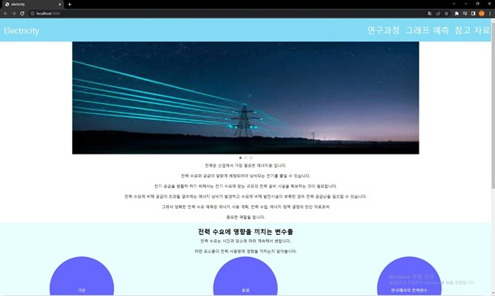
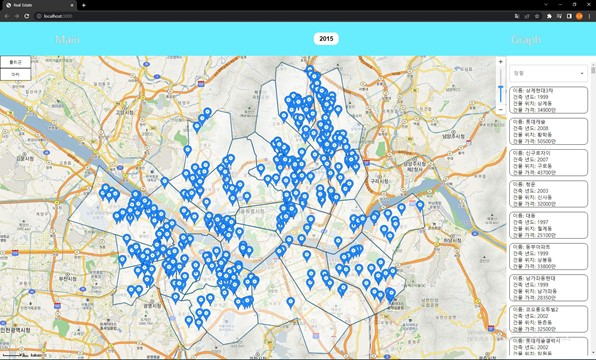
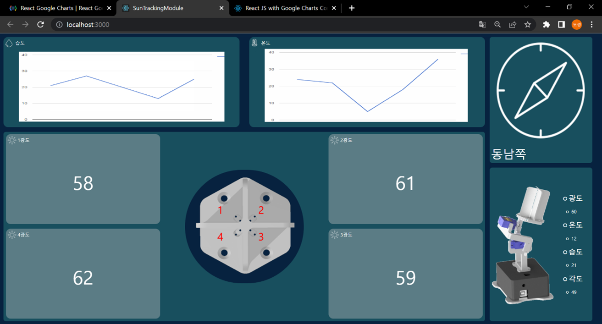

ABOUT
작성중입니다.
CONTACT
010-8512-9617
SKILLS
HTML/CSS, JavaScript, React, TypeScript, Git, Node.js, Express.js, MySQL
EDUCATION
경상국립대학교 융합기술공과대학 융합전자공학부 (2018.03 ~ 2024.02 예정)
작성중입니다.
010-8512-9617
HTML/CSS, JavaScript, React, TypeScript, Git, Node.js, Express.js, MySQL
경상국립대학교 융합기술공과대학 융합전자공학부 (2018.03 ~ 2024.02 예정)


